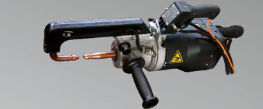

Cargas medianas hasta 25 kg.
Los equilibradores Tecna para cargas medianas, son indicados para trabajar comodamente con pinzas de soldadura manuales y neumáticas.
El uso del equilibrador Tecna también limita el desgaste de los
cables de alimentación de las pinzas de soldadura, evita daños a
las personas y herramientas.
La aplicación del equilibrador es absolutamente versátil, se puede
utilizar en islas de soldadura o en la línea de montaje y es
adecuado para el uso de herramientas pequeñas, como pistolas
neumáticas industriales, destornilladores etc..
La gama cargas medianas soporta cargas de hasta 25 kg.
Equilibradores Tecna gama cargas medianas
Los equilibradores Tecna para cargas medianas, son indicados para trabajar comodamente con pinzas de soldadura manuales y neumáticas.